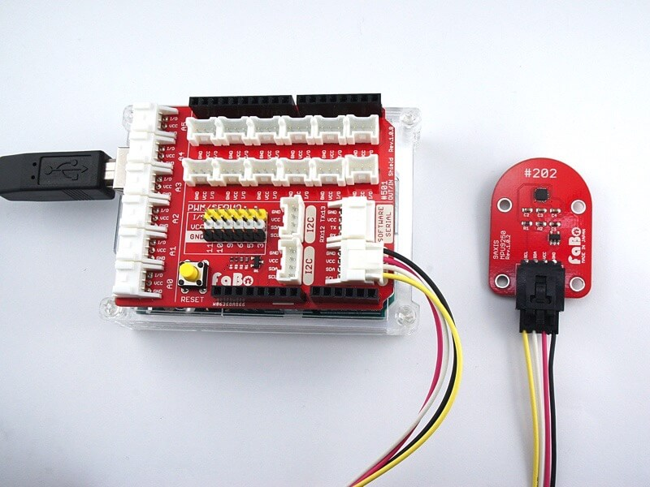
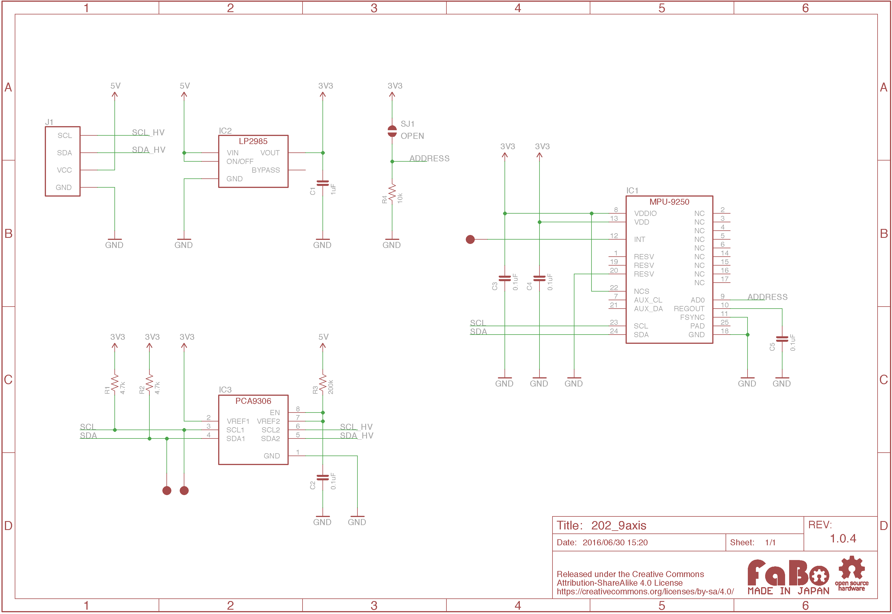

#202 9Axis I2C Brick

Overview
1チップで3軸加速度、3軸ジャイロ、3軸コンパスを取得できるセンサを使用したBrickです。
I2Cでデータを取得できます。
Connecting
I2Cコネクタへ接続します。

Support
MPU-9250 Datasheet
Register
MPU-9250は、三軸加速度、ジャイロ用とコンパス用の2つのI2C Slave Addressがあります。
MPU-9250(三軸加速度、ジャイロ)
|Slave Address|
|--|--|
|0x68|
AK8963(コンパス)
|Slave Address |
|--|--|
|0x0C|
回路図

Library
for Arduino
ライブラリ名：「FaBo 202 9Axis MPU9250」
for RapberryPI
| pip install FaBo9Axis_MPU9250
|
Sample Code
for Arduino
I2Cコネクタに接続した9Axis I2C Brickより３軸加速度、３軸ジャイロ、３軸コンパス情報を取得し、シリアルモニタに出力します。
1
2
3
4
5
6
7
8
9
10
11
12
13
14
15
16
17
18
19
20
21
22
23
24
25
26
27
28
29
30
31
32
33
34
35
36
37
38
39
40
41
42
43
44
45
46
47
48
49
50
51
52
53
54
55
56
57
58
59
60
61
62
63
64
65
66
67
68
69
70
71
72
73
74
75
76
77
78
79
80
81
82
83
84
85
86
87
88
89
90
91
92
93
94
95
96
97
98
99
100
101
102
103
104
105
106
107
108
109
110
111
112
113
114
115
116
117 | //
// FaBo Brick Sample
//
// #202 9AXIS I2C Brick
//
#include <Wire.h>
#define ADDR_MPU9250 (0x68) // 3軸加速度、ジャイロ
#define ADDR_AK8963 (0x0C) // コンパス
void setup()
{
Serial.begin(9600); // シリアルの開始デバック用
Wire.begin(); // I2Cの開始
byte who_am_i = 0x00;
// デバイスチェック
Serial.println("Checking I2C device...");
readI2c(ADDR_MPU9250, 0x75, 1, &who_am_i);
if(who_am_i == 0x71){
Serial.println("I am MPU9250");
}else{
Serial.println("Not detected");
}
// コンパス有効化
writeI2c(ADDR_MPU9250,0x6B,0x00);
writeI2c(ADDR_MPU9250,0x37,0x02);
}
void loop()
{
// 3軸加速度
int length = 6;
byte axis_buff[6];
readI2c(ADDR_MPU9250,0x3B, length, axis_buff);
int ax = axis_buff[0] << 8 | axis_buff[1];
int ay = axis_buff[2] << 8 | axis_buff[3];
int az = axis_buff[4] << 8 | axis_buff[5];
// 3軸加速度出力
Serial.print("ax: ");
Serial.print( ax );
Serial.print(" ay: ");
Serial.print( ay );
Serial.print(" az: ");
Serial.println( az );
// ジャイロ
byte gyro_buff[6];
readI2c(ADDR_MPU9250,0x43, length, gyro_buff);
int gx = gyro_buff[0] << 8 | gyro_buff[1];
int gy = gyro_buff[2] << 8 | gyro_buff[3];
int gz = gyro_buff[4] << 8 | gyro_buff[5];
// ジャイロ出力
Serial.print("gx: ");
Serial.print( gx );
Serial.print(" gy: ");
Serial.print( gy );
Serial.print(" gz: ");
Serial.println( gz );
// コンパス
byte magn_buff[7];
int mag_length = 7;
readI2c(ADDR_AK8963,0x03, mag_length, magn_buff);
int mx = magn_buff[0] << 8 | magn_buff[1];
int my = magn_buff[2] << 8 | magn_buff[3];
int mz = magn_buff[4] << 8 | magn_buff[5];
// コンパス取得用の設定(更新用)
writeI2c(ADDR_AK8963,0x0A,0x01);
// コンパス出力
Serial.print("mx: ");
Serial.print( mx );
Serial.print(" my: ");
Serial.print( my );
Serial.print(" mz: ");
Serial.println( mz );
Serial.println( "" );
delay(1000);
}
// I2Cへの書き込み
void writeI2c(int slave_addr, byte register_addr, byte value) {
Wire.beginTransmission(slave_addr);
Wire.write(register_addr);
Wire.write(value);
Wire.endTransmission();
}
// I2Cへの読み込み
void readI2c(int slave_addr,byte register_addr, int num, byte *buf) {
Wire.beginTransmission(slave_addr);
Wire.write(register_addr);
Wire.endTransmission();
Wire.beginTransmission(slave_addr);
Wire.requestFrom(slave_addr, num);
int i = 0;
while (Wire.available())
{
byte n = 0x00;
n = Wire.read();
*(buf + i) = n;
i++;
}
Wire.endTransmission();
}
|
for Raspberry Pi
I2Cコネクタに接続した9Axis I2C Brickより３軸加速度、３軸ジャイロ、３軸コンパス情報を取得し、コンソールに出力します。
1
2
3
4
5
6
7
8
9
10
11
12
13
14
15
16
17
18
19
20
21
22
23
24
25
26
27
28
29
30
31
32
33
34
35
36
37
38
39
40
41
42
43
44
45
46
47
48
49
50
51
52
53
54
55
56
57
58
59
60
61
62
63
64
65
66
67
68
69
70
71
72
73
74
75
76
77
78
79
80
81
82
83
84
85
86
87
88
89
90
91
92
93
94
95
96
97
98
99
100
101
102
103
104
105
106
107 | # coding: utf-8
#
# FaBo Brick Sample
#
# #202 9AXIS I2C Brick
#
import smbus
import time
ADDRESS = 0x68
CHANNEL = 1
WHO_AM_I = 0x75
PWR_MGMT_1 = 0x6B
INT_PIN_CFG = 0x37
ACCEL_OUT = 0x3B
TEMP_OUT = 0x41
GYRO_OUT = 0x43
MAGNETO_ADDR = 0x0C
MAGNETO_CNTL1 = 0x0A
MAGNETO_CNTL1_MODE = 0x02
MAGNETO_OUT = 0x03
bus = smbus.SMBus(CHANNEL)
class MPU9250:
def __init__(self, address):
self.address = address
data = bus.read_i2c_block_data(self.address, WHO_AM_I, 1)
# print '%x' % data[0]
if data[0] == 113:
bus.write_byte_data(self.address, PWR_MGMT_1, 0x00)
bus.write_byte_data(self.address, INT_PIN_CFG, 0x02)
bus.write_byte_data(MAGNETO_ADDR, MAGNETO_CNTL1, MAGNETO_CNTL1_MODE)
def read_accel(self):
data = bus.read_i2c_block_data(self.address, ACCEL_OUT, 6)
x = data[0] | (data[1] << 8)
if(x & (1 << 16 - 1)):
x = x - (1<<16)
y = data[2] | (data[3] << 8)
if(y & (1 << 16 - 1)):
y = y - (1<<16)
z = data[4] | (data[5] << 8)
if(z & (1 << 16 - 1)):
z = z - (1<<16)
return {"x": x, "y": y, "z": z}
def read_gyro(self):
data = bus.read_i2c_block_data(self.address, GYRO_OUT, 6)
x = data[0] | (data[1] << 8)
if(x & (1 << 16 - 1)):
x = x - (1<<16)
y = data[2] | (data[3] << 8)
if(y & (1 << 16 - 1)):
y = y - (1<<16)
z = data[4] | (data[5] << 8)
if(z & (1 << 16 - 1)):
z = z - (1<<16)
return {"x": x, "y": y, "z": z}
def read_mag(self):
data = bus.read_i2c_block_data(MAGNETO_ADDR, MAGNETO_OUT, 7)
x = data[0] | (data[1] << 8)
if(x & (1 << 16 - 1)):
x = x - (1<<16)
y = data[2] | (data[3] << 8)
if(y & (1 << 16 - 1)):
y = y - (1<<16)
z = data[4] | (data[5] << 8)
if(z & (1 << 16 - 1)):
z = z - (1<<16)
return {"x": x, "y": y, "z": z}
if __name__ == "__main__":
mpu9250 = MPU9250(ADDRESS)
while True:
accel = mpu9250.read_accel()
print " ax = " , ( accel['x'] )
print " ay = " , ( accel['y'] )
print " az = " , ( accel['z'] )
gyro = mpu9250.read_gyro()
print " gx = " , ( gyro['x'] )
print " gy = " , ( gyro['y'] )
print " gz = " , ( gyro['z'] )
mag = mpu9250.read_mag()
print " mx = " , ( mag['x'] )
print " my = " , ( mag['y'] )
print " mz = " , ( mag['z'] )
print
time.sleep(1)
|
Parts
GitHub
- https://github.com/FaBoPlatform/FaBo/tree/master/202_9axis